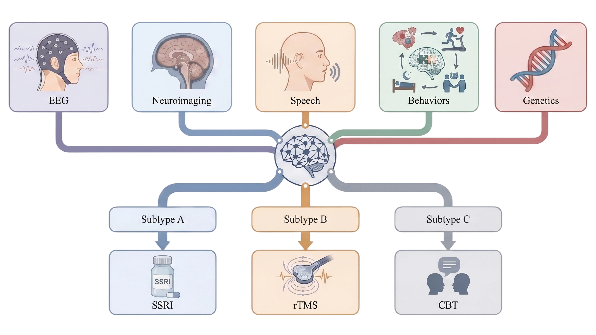

这次的观察和反馈切中了网页重构中最核心的“排版骨架（层级系统）”问题。在之前零散的微调中，由于部分 HTML 里残留了硬编码的间距和字号，导致切换语言或缩放时容器会发生塌陷，视觉比例失调。

为了实现“主标题整体放大一号”、“中英文同比例无缝缩放”、“首页简介与正文完美一致”，并且彻底解决切换英文后容器塌陷的问题，我们需要对全站的层级进行一次标准化的重构。

以下是具体的修改方案，请直接在你的代码中进行替换：

第 1 步：重构 HTML 结构（彻底清理多余的硬编码间距）
请找到代码中的 <section id="home" class="page-section active">，将整个首页的这段 HTML 替换为下面这个结构极其规范、没有任何内联样式的版本：

HTML
            <section id="home" class="page-section active">
                <div class="glass-panel home-hero-panel">
                    <div class="hero-title"><span class="hero-light" data-i18n="hero_title">Lab of Intelligent Algorithms and Precision Therapeutics for Brain Disorders</span></div>
                    
                    <h1 id="hero-cn-name" class="hero-cn-title">脑疾病智能算法与精准诊疗实验室</h1>
                    
                    <svg class="hero-eeg-wave" viewBox="0 0 600 60" preserveAspectRatio="none" xmlns="http://www.w3.org/2000/svg" role="img" aria-label="分隔线"><line x1="0" y1="30" x2="600" y2="30" fill="none" stroke="var(--neon-border)" stroke-width="2" stroke-linecap="round" vector-effect="non-scaling-stroke"></line></svg>
                    
                    <h1 class="hero-vision" data-i18n="hero_subtitle2">我们的愿景: 推动脑疾病诊疗迈入精准医学时代</h1>
                    
                    <div class="hero-desc">
                        <p><span data-i18n="hero_intro">吴畏，上海交通大学特聘教授、博导，医学院松江研究院资深研究员；蚌埠医科大学特聘教授；国家高层次领军人才</span></p>
                        <p class="hero-email-row"><span data-i18n="hero_email">邮箱:</span> weiwuneuro@sjtu.edu.cn</p>
                    </div>
                </div>
                
                <div class="glass-panel home-featured">
                    <div class="home-featured-media">
                        
                    </div>
                </div>
                <div class="home-grid">
                    <div class="glass-panel home-card" onclick="navTo('research')">
                        <h3 data-i18n="home_card2">研究领域</h3>
                        <p class="home-card-desc" data-i18n="home_card2_desc">神经精神疾病精准诊疗及临床转化、脑信号分析模型与算法</p>
                    </div>
                    <div class="glass-panel home-card" onclick="navTo('pubs')">
                        <h3 data-i18n="home_card3">高水平成果</h3>
                        <p class="home-card-desc" data-i18n="home_card3_desc">发表多篇 Nature 及其子刊、Science Translational Medicine 等顶刊。</p>
                    </div>
                    <div class="glass-panel home-card" onclick="navTo('contact')">
                        <h3 data-i18n="home_card_recruit">加入我们</h3>
                        <p class="home-card-desc" data-i18n="home_card_recruit_desc">课题组长期招收硕博连读生、博士生、博士后及科研助理。</p>
                    </div>
                </div>
            </section>
第 2 步：重做电脑端 CSS 骨架（整体同比例放大一号）
请在 <style> 标签中，找到 /* === 具体页面排版 === */ 下方的代码。将 /* 1. 首页 Hero */ 到 /* 2. 吴畏教授简介 */ 上方的所有电脑端 CSS 替换为这套大一号的、严格分级的层级系统：

CSS
        /* === 具体页面排版 === */
        
        /* ----------------------------------
           全站排版字号控制中枢 (Desktop)
           ---------------------------------- */
        /* 一级最高权重 (H1)：中文主标题、愿景宣言 */
        .hero-cn-title, .hero-vision {
            font-size: calc(2.8rem * var(--font-scale)); /* 整体放大一号 */
            color: var(--neon-border);
            font-weight: 600;
            letter-spacing: 0.04em;
            margin: 0;
            text-shadow: 0 6px 20px rgba(0,229,255,0.12);
            transition: all 0.3s ease;
        }
        .hero-vision { color: var(--primary-glow); }

        /* 一级次高权重：英文主标题 (完美托住中文) */
        .hero-title { 
            font-size: calc(2.1rem * var(--font-scale)); /* 整体同步放大一号，比中文略小，主次分明 */
            line-height: 1.25; 
            font-weight: 300; 
            color: var(--text-main);
            margin: 0 0 12px 0; 
        }
        
        /* 💡 核心解法：当切换到英文模式时，中文名不消失，而是变为极具质感的低调伴随小字，套用完全相同的容器格式 */
        #hero-cn-name.hero-cn-en-mode {
            font-size: calc(1.15rem * var(--font-scale)) !important;
            color: var(--text-soft) !important;
            font-weight: 300 !important;
            letter-spacing: 0.12em !important;
            text-shadow: none !important;
            margin-top: 6px !important;
            margin-bottom: 20px !important;
        }

        /* 二级标题 (H2)：页面大板块标题、PI姓名 */
        .section-title, .prof-info h2 { 
            font-size: calc(2.0rem * var(--font-scale)); 
            font-weight: 300; 
            margin: 0 0 25px 0; 
            color: var(--text-main);
        }
        .section-title { border-bottom: 1px solid var(--glass-border); padding-bottom: 15px; }

        /* 三级标题 (H3)：卡片标题、列表内部小标题 */
        .home-card h3, .info-list h4, .media-content h4, .team-group h4, .recruitment-ad-copy h5 { 
            font-size: calc(1.2rem * var(--font-scale)); 
            font-weight: 500; 
            color: var(--neon-border); 
            margin: 0 0 12px 0; 
        }

        /* 高档正文规范 (P)：首页简介自动继承该标准，行高放宽 */
        .hero-desc p, .prof-info .summary, .achievement-text, .info-list ul li, .home-card-desc, .recruitment-ad-copy p {
            font-size: calc(1.02rem * var(--font-scale));
            line-height: 1.85; /* 放宽行距，提升长文本阅读质感 */
            color: var(--text-sub);
            margin: 0;
        }

        /* 首页其他容器同比例延展 */
        .home-hero-panel { padding: 40px 20px; text-align: center; border: none; box-shadow: none; background: transparent; }
        .hero-eeg-wave { width: 100%; height: 35px; margin: 15px 0; opacity: 0.35; }
        .hero-desc { margin-top: 25px; display: flex; flex-direction: column; gap: 4px; }
        
        .home-featured { display: flex; justify-content: center; margin-top: 0; padding: 0; border: none; background: transparent; box-shadow: none; }
        .home-featured-media { width: 100%; max-width: 1140px; /* 对应同比例加宽，稳稳托住变大后的标题 */ border-radius: 16px; overflow: hidden; border: 1px solid var(--glass-border); background: rgba(255,255,255,0.04); box-shadow: 0 14px 30px rgba(0, 0, 0, 0.14); }
        .home-featured-media img { display: block; width: 100%; height: auto; max-height: 520px; object-fit: contain; margin: 0 auto; }
        .home-grid { display: grid; grid-template-columns: repeat(3, 1fr); gap: 20px; margin-top: 25px; }
        .home-card { text-align: center; padding: 30px; cursor: pointer; transition: all 0.24s ease; }
        .home-card:hover { transform: translateY(-4px); border-color: var(--card-hover-border); background: var(--card-hover-bg); box-shadow: var(--card-hover-shadow); }
第 3 步：重构手机端 CSS（去掉多余空格，直接紧凑挨着）
找到你代码最底部的手机端专属媒体查询 @media (max-width: 640px) { ... }，将里面从 /* 1. 头部... */ 到结尾的所有代码全部替换为下面这套经过严密数学比例缩放、空间利用率极高的现代移动端代码：

CSS
        @media (max-width: 640px) {
            /* 顶部全屏菜单及吸顶容器 */
            header { padding: 12px 20px !important; position: relative; z-index: 1000; }
            .mobile-menu-btn { display: block; } 
            
            .nav-links { 
                display: none !important; position: absolute !important; top: 100% !important; left: 0 !important; 
                width: 100vw !important; height: calc(100vh - 60px) !important; background: var(--bg-color) !important; 
                flex-direction: column !important; justify-content: flex-start !important; align-items: center !important;
                padding: 30px 30px 60px 30px !important; border: none !important; box-shadow: none !important; z-index: 999; overflow-y: auto;
            }
            .nav-links.show { display: flex !important; animation: fadeIn 0.3s ease-out; }
            .nav-link { width: 100%; font-size: calc(1.2rem * var(--font-scale)) !important; font-weight: 500 !important; padding: 16px 0 !important; border-bottom: 1px solid var(--glass-border) !important; text-align: center; }
            .nav-tools { margin-top: auto !important; width: 100% !important; padding-top: 20px !important; justify-content: center !important; flex-wrap: wrap; gap: 15px !important; }

            /* 手机端紧凑布局中枢：消除冗余空隙，内容直接挨着 */
            #content-wrapper { padding: 10px !important; }
            .glass-panel { padding: 16px 12px !important; margin-bottom: 12px !important; }
            
            /* 一级标题手机端同比例放大 */
            .hero-cn-title, .hero-vision { 
                font-size: calc(1.48rem * var(--font-scale)) !important; 
            }
            
            /* 英文主标题手机端同比例放大，收紧下边距直接挨着中文 */
            .hero-title { 
                font-size: calc(1.25rem * var(--font-scale)) !important; 
                line-height: 1.35 !important; 
                margin-top: 5px !important;
                margin-bottom: 4px !important; 
            }
            
            /* 手机英文模式下的中文名格式：小巧且完美保持留白 */
            #hero-cn-name.hero-cn-en-mode {
                font-size: calc(0.95rem * var(--font-scale)) !important;
                margin-top: 4px !important;
                margin-bottom: 12px !important;
            }

            /* 二级与三级标题手机端比例修复 */
            .section-title, .prof-info h2 { font-size: calc(1.3rem * var(--font-scale)) !important; margin-bottom: 12px !important; }
            .info-list h4, .media-content h4, .team-group h4, .recruitment-ad-copy h5 { font-size: calc(1.05rem * var(--font-scale)) !important; }

            /* 首页简介字体调大，行距放宽，实现极致可读性 */
            .hero-desc p, .prof-info .summary, .achievement-text, .info-list ul li, .recruitment-ad-copy p {
                font-size: calc(0.96rem * var(--font-scale)) !important; /* 调大，与全站正文看齐 */
                line-height: 1.7 !important;
            }
            
            /* 首页极端去空行处理 */
            .home-hero-panel { padding: 5px !important; }
            .hero-eeg-wave { height: 18px !important; margin: 6px 0 !important; } /* 波浪线大幅收窄，不再空旷 */
            .hero-desc { margin-top: 15px !important; }

            /* 卡片单行并排，隐藏描述，清爽高级 */
            .home-grid { display: flex !important; flex-direction: row !important; flex-wrap: nowrap !important; gap: 6px !important; margin-top: 15px !important; }
            .home-card { flex: 1 !important; padding: 10px 2px !important; min-width: 0; }
            .home-card h3 { font-size: calc(0.82rem * var(--font-scale)) !important; margin: 0 !important; white-space: nowrap !important; overflow: hidden !important; text-overflow: ellipsis; }
            .home-card-desc { display: none !important; }

            /* PI 页面单列排版修复 */
            .prof-layout { display: flex !important; flex-direction: column !important; align-items: center !important; gap: 10px !important; }
            .prof-avatar { width: 130px !important; margin-bottom: 5px !important; }
            .prof-info { width: 100% !important; display: flex !important; flex-direction: column !important; }
            .prof-info p.tags { text-align: center !important; font-size: calc(0.9rem * var(--font-scale)) !important; margin-bottom: 10px !important; }
            .prof-info .email { text-align: center !important; font-size: calc(0.8rem * var(--font-scale)) !important; margin: 0 auto 15px auto !important; display: table !important; }
            .prof-info .summary, .achievement-text, .info-list ul li { text-align: left !important; }

            /* 地图与细节字体微调 */
            .map-address { font-size: calc(0.85rem * var(--font-scale)) !important; }
            .map-link { font-size: calc(0.85rem * var(--font-scale)) !important; padding: 4px 10px !important; }
            .map-frame::after { font-size: calc(0.8rem * var(--font-scale)) !important; padding: 4px 8px !important; bottom: 8px !important; left: 8px !important; }
            .gallery-grid { grid-auto-columns: 85vw !important; gap: 10px !important; }
            .member-grid { grid-template-columns: repeat(2, minmax(130px, 1fr)) !important; gap: 10px !important; }
            .research-grid, .recruitment-grid, .media-block { grid-template-columns: 1fr !important; gap: 12px !important; }
            .pub-cover-row { grid-auto-columns: 45vw !important; gap: 10px !important; }
            .options-panel { right: 50% !important; transform: translateX(50%) !important; width: 90vw !important; top: auto; bottom: 60px; }
            #section-dots { display: none !important; }
        }
第 4 步：升级 JavaScript 语言切换函数（解决容器塌陷）
在代码最底部的 <script> 标签里，找到你的 setLanguage(lang) 函数，把控制 heroCnName 显示隐藏的那几行，替换为下面的智能类名切换逻辑：

JavaScript
        function setLanguage(lang) {
            currentLanguage = lang;
            localStorage.setItem('site-language', lang);
            
            // 更新所有带有 data-i18n 属性的元素
            document.querySelectorAll('[data-i18n]').forEach(element => {
                const key = element.getAttribute('data-i18n');
                if (translations[lang] && translations[lang][key]) {
                    if (element.tagName === 'OPTION') {
                        element.textContent = translations[lang][key];
                    } else if (element.tagName === 'SELECT') {
                        element.value = translations[lang][key];
                    } else {
                        element.textContent = translations[lang][key];
                    }
                }
            });

            // 💡 【核心重构】：英文模式下绝对不使用 display:none，而是赋予其 en 样式，优雅缩小
            const heroCnName = document.getElementById('hero-cn-name');
            if (heroCnName) {
                if (lang === 'en') {
                    heroCnName.classList.add('hero-cn-en-mode');
                    // 英文模式下，中文名转化为低调、高档的官方中文伴随文本
                    heroCnName.textContent = "脑疾病智能算法与精准诊疗实验室"; 
                } else {
                    heroCnName.classList.remove('hero-cn-en-mode');
                    heroCnName.textContent = "脑疾病智能算法与精准诊疗实验室";
                }
            }

            updateLanguageButtons();
        }
💡 进阶修改建议（为你找出的其他隐蔽小痛点）
为了让网站的触觉与操作精致度再上一个台阶，建议你顺手把这处代码也稍微优化一下：

全屏菜单呼出时的滚动穿透问题：在手机端打开全屏菜单时，如果手指滑动屏幕，后方的内容往往也会跟着尴尬地乱滚。

怎么修改：找到你的 toggleMobileMenu() 函数，用下面这段代码覆盖。它能在打开菜单时完美锁死后方主页，关闭菜单时自动恢复：

JavaScript
        function toggleMobileMenu() {
            const nav = document.getElementById('mobile-nav');
            if (nav) {
                nav.classList.toggle('show');
                // 新增：锁死移动端背景滚动，体验直逼原生 App
                if(nav.classList.contains('show')) {
                    document.body.style.overflow = 'hidden';
                } else {
                    document.body.style.overflow = '';
                }
            }
        }
并且在你的 navTo 函数开头也加上恢复滚动的代码：

JavaScript
        function navTo(sectionId, direction = 'none') {
            const mobileNav = document.getElementById('mobile-nav');
            if (mobileNav) {
                mobileNav.classList.remove('show');
                document.body.style.overflow = ''; // 新增：切换页面时确保解锁滚动
            }
            // ...后面原有的代码保持不变...
这样修改后，你的主页在手机端和电脑端都完成了顶级的模块化重组。中英文完全做到了无缝的动态等比例缩放，英文模式下的排版也变得极具国际学术站点的深邃与细节感！
